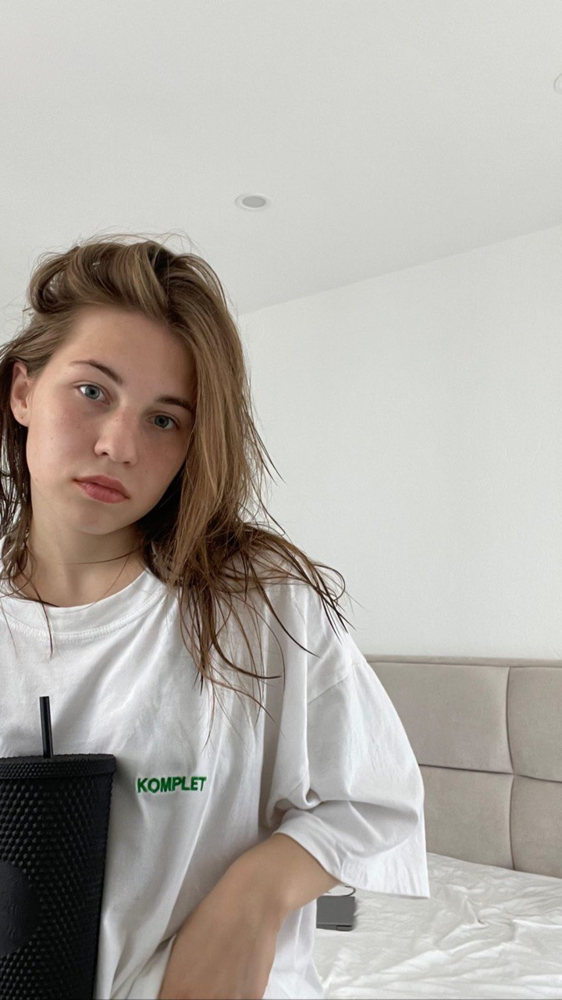

{#fig:002 width=70%}
{#fig:002 width=70%}
Построить графики к задаче, используя языки Julia и OpenModelica.
Дуополия — это экономическая ситуация, когда на рынке конкурентную борьбу ведут только две компании, не связанные между собой никакими соглашениями.
Рассмотрим две фирмы, производящие взаимозаменяемые товары одинакового качества и находящиеся в одной рыночной нише. Считаем, что в рамках нашей модели конкурентная борьба ведётся только рыночными методами. То есть, конкуренты могут влиять на противника путем изменения параметров своего производства: себестоимость, время цикла, но не могут прямо вмешиваться в ситуацию на рынке («назначать» цену или влиять на потребителей каким-либо иным способом.) Будем считать, что постоянные издержки пренебрежимо малы, и в модели учитывать не будем. В этом случае динамика изменения объемов продаж фирмы 1 и фирмы 2 описывается следующей системой уравнений: $$\begin{cases} \frac{d M_1}{dθ} = M_1 - \dfrac{b}{c_1} M_1 M_2 - \dfrac{a_1}{c_1} M_1^2\ \frac{d M_2}{dθ} = \dfrac{c_2}{c_1} M_1 - \dfrac{b}{c_1} M_1 M_2 - \dfrac{a_2}{c_1} M_2^2 \end{cases}$$
Рассмотрим модель, когда, помимо экономического фактора влияния (изменение себестоимости, производственного цикла, использование кредита и т.п.), используются еще и социально-психологические факторы – формирование общественного предпочтения одного товара другому, не зависимо от их качества и цены. В этом случае взаимодействие двух фирм будет зависеть друг от друга, соответственно коэффициент перед M_1 и M_ 2 будет отличаться. Пусть в рамках рассматриваемой модели динамика изменения объемов продаж фирмы 1 и фирмы 2 описывается следующей системой уравнений: $$\begin{cases} \frac{d M_1}{dθ} = M_1 - (\dfrac{b}{c_1}+0.00017) M_1 M_2 - \dfrac{a_1}{c_1} M_1^2\ \frac{d M_2}{dθ} = \dfrac{c_2}{c_1} M_1 - \dfrac{b}{c_1} M_1 M_2 - \dfrac{a_2}{c_1} M_2^2 \end{cases}$$
using Plots
using DifferentialEquations
p_cr = 39
N = 91
q = 1
t1 = 31
t2 = 28
p1 = 11.2
p2 = 15.5
a1 = p_cr/(t1*t1*p1*p1*N*q)
a2 = p_cr/(t2*t2*p2*p2*N*q)
b = p_cr/(t1*t1*p1*p1*t2*t2*p2*p2*N*q)
c1 = (p_cr-p1)/(t1*p1)
c2 = (p_cr-p2)/(t2*p2)
tspan = (0.0, 40)
u = [7.7, 8.8]
p = [c1, c2, b, a1, a2]
function f1(du, u, p, t)
M1, M2 = u
c1, c2, b, a1, a2 = p
du[1] = (c1/c1)*M1 - (b/c1)*M1*M2 - (a1/c1)*M1*M1
du[2] = (c2/c1)*M2 - (b/c1)*M1*M2 - (a2/c1)*M2*M2
end
prob1 = ODEProblem(f1, u, tspan, p)
sol1 = solve(prob1, Tsit5())
plot(sol1, label = ["M1" "M2"])
Полученный график случай 1 (рис. @fig:001). {#fig:001 width=70%}
model lab_08
Real M1(start = 7.7);
Real M2(start = 8.8);
parameter Real p_cr = 39;
parameter Real N = 91;
parameter Real q = 1;
parameter Real t1 = 31;
parameter Real t2 = 28;
parameter Real p1 = 11.2;
parameter Real p2 = 15.5;
parameter Real a1 = p_cr/(t1*t1*p1*p1*N*q);
parameter Real a2 = p_cr/(t2*t2*p2*p2*N*q);
parameter Real b = p_cr/(t1*t1*p1*p1*t2*t2*p2*p2*N*q);
parameter Real c1 = (p_cr-p1)/(t1*p1);
parameter Real c2 = (p_cr-p2)/(t2*p2);
equation
der(M1) = (c1/c1)*M1 - (b/c1)*M1*M2 - (a1/c1)*M1*M1;
der(M2) = (c2/c1)*M2 - (b/c1)*M1*M2 - (a2/c1)*M2*M2;
end lab_08;
Полученный график случай 1(рис. @fig:001).
{#fig:002 width=70%}
using Plots
using DifferentialEquations
p_cr = 39
N = 91
q = 1
t1 = 31
t2 = 28
p1 = 11.2
p2 = 15.5
a1 = p_cr/(t1*t1*p1*p1*N*q)
a2 = p_cr/(t2*t2*p2*p2*N*q)
b = p_cr/(t1*t1*p1*p1*t2*t2*p2*p2*N*q)
c1 = (p_cr-p1)/(t1*p1)
c2 = (p_cr-p2)/(t2*p2)
tspan = (0.0, 40)
u = [7.7, 8.8]
p = [c1, c2, b, a1, a2]
function f2(du, u, p, t)
M1, M2 = u
c1, c2, b, a1, a2 = p
du[1] = (c1/c1)*M1 - ((b+0.00017)/c1)*M1*M2 - (a1/c1)*M1*M1
du[2] = (c2/c1)*M2 - (b/c1)*M1*M2 - (a2/c1)*M2*M2
end
prob1 = ODEProblem(f2, u, tspan, p)
sol1 = solve(prob1, Tsit5())
plot(sol1, label = ["M1" "M2"])
Полученный график случай 2 (рис. @fig:003).
 {#fig:003 width=70%}
{#fig:003 width=70%}
model lab_08
Real M1(start = 7.7);
Real M2(start = 8.8);
parameter Real p_cr = 39;
parameter Real N = 91;
parameter Real q = 1;
parameter Real t1 = 31;
parameter Real t2 = 28;
parameter Real p1 = 11.2;
parameter Real p2 = 15.5;
parameter Real a1 = p_cr/(t1*t1*p1*p1*N*q);
parameter Real a2 = p_cr/(t2*t2*p2*p2*N*q);
parameter Real b = p_cr/(t1*t1*p1*p1*t2*t2*p2*p2*N*q);
parameter Real c1 = (p_cr-p1)/(t1*p1);
parameter Real c2 = (p_cr-p2)/(t2*p2);
equation
der(M1) = (c1/c1)*M1 - ((b+0.00017)/c1)*M1*M2 - (a1/c1)*M1*M1;
der(M2) = (c2/c1)*M2 - (b/c1)*M1*M2 - (a2/c1)*M2*M2;
end lab_08;
Полученный график при случай 2(рис. @fig:004).
 {#fig:004 width=70%}
{#fig:004 width=70%}
В процессе выполнения данной лабораторной работы я построила графики, используя Julia и OpenModelica, а также приобрела практические навыки работы с Julia и OpenModelica.